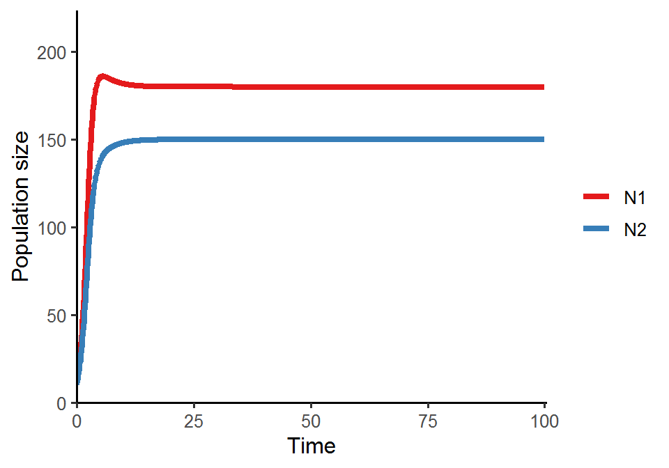
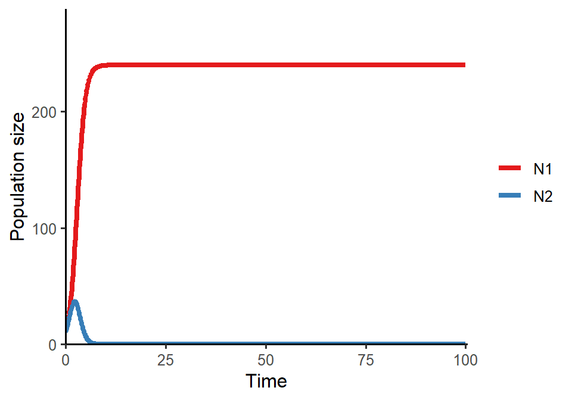
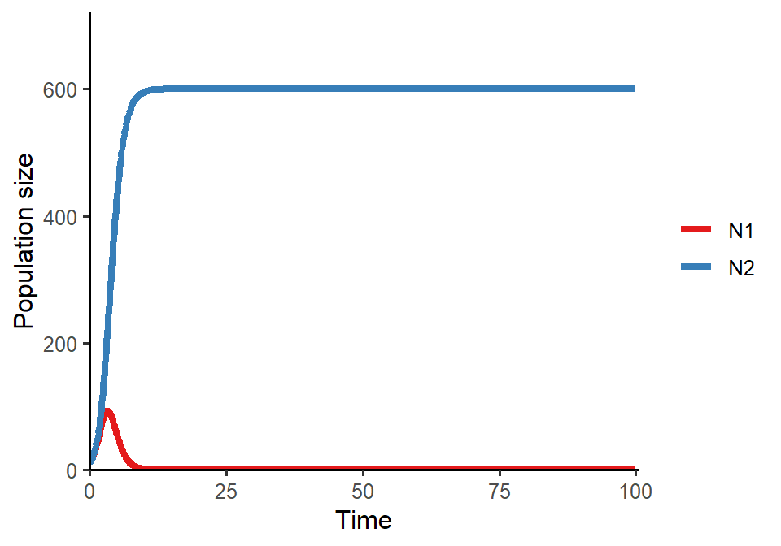

Week 8
Lotka-Volterra model of competition: linear stability analysis
Lecture in a nutshell
- The differential equations
- \(f_{A}(N_{A}, N_{B}) = \frac {dN_{A}}{dt} = N_{A}(r_{A}-\alpha_{AA}N_{A}-\alpha_{AB}N_{B})\)
- \(f_{B}(N_{A}, N_{B}) = \frac {dN_{B}}{dt} = N_{B}(r_{B}-\alpha_{BB}N_{B}-\alpha_{BA}N_{A})\)
- Analytical analysis (1): Invasion analysis
- Idea: can a species invade the other’s equilibrium?
- Invasion growth rate (IGR): the growth rate of focal species when rare
\(IGR_{i} = \lim_{N_{i} \to 0} \frac {1}{N_{i}} \frac {dN_{i}}{dt}|_{N_{j}}\)
- \(IGR_{A} = \lim_{N_{A} \to 0} \frac {1}{N_{A}} \frac {dN_{A}}{dt}|_{E_{B}} = r_{A}-r_{B}(\frac{\alpha_{AB}}{\alpha_{BB}})\rightarrow\) Species A can invade when \(\frac{\alpha_{BB}}{r_{B}} > \frac{\alpha_{AB}}{r_{A}}\)
- \(IGR_{B} = \lim_{N_{B} \to 0} \frac {1}{N_{B}} \frac {dN_{B}}{dt}|_{E_{A}} = r_{B}-r_{A}(\frac{\alpha_{BA}}{\alpha_{AA}}) \rightarrow\) Species B can invade when \(\frac{\alpha_{AA}}{r_{A}} > \frac{\alpha_{BA}}{r_{B}}\)
- \(IGR_{A} = \lim_{N_{A} \to 0} \frac {1}{N_{A}} \frac {dN_{A}}{dt}|_{E_{B}} = r_{A}-r_{B}(\frac{\alpha_{AB}}{\alpha_{BB}})\rightarrow\) Species A can invade when \(\frac{\alpha_{BB}}{r_{B}} > \frac{\alpha_{AB}}{r_{A}}\)
- System dynamics:
- \(IGR_{A} > 0\) and \(IGR_{B} < 0\): Species A wins
- \(IGR_{A} < 0\) and \(IGR_{B} > 0\): Species B wins
- \(IGR_{A} > 0\) and \(IGR_{B} > 0\): Two species coexist (mutual invasibility)
- \(IGR_{A} < 0\) and \(IGR_{B} < 0\): Priority effect (founder control)
- Analytical analysis (2): Local stability analysis
- Behavior of a small displacement \(\epsilon\) near the equilibrium: \(\frac{d\epsilon}{dt} = \frac{d}{dt} \begin{vmatrix}\epsilon_{A}\\ \epsilon_{B}\end{vmatrix} = \begin{vmatrix}\frac {\partial f_{A}}{\partial N_{A}} & \frac {\partial f_{A}}{\partial N_{B}}\\\frac {\partial f_{B}}{\partial N_{A}} & \frac {\partial f_{B}}{\partial N_{B}}\end{vmatrix}_{(N_{A}^{*}, N_{B}^{*})} \begin{vmatrix}\epsilon_{A}\\ \epsilon_{B}\end{vmatrix} = J\begin{vmatrix}\epsilon_{A}\\ \epsilon_{B}\end{vmatrix}\)
- General solution for \(\begin{vmatrix}\epsilon_{A}\\ \epsilon_{B}\end{vmatrix}\): \(w1\begin{vmatrix}C_{1}\\ D_{1}\end{vmatrix}e^{\lambda_{1}t} + w2\begin{vmatrix}C_{2}\\ D_{2}\end{vmatrix}e^{\lambda_{2}t} \\\) where \(\lambda_{1}\) and \(\lambda_{2}\) are the two eigenvalues of \(J\), \(w1\) and \(w2\) are constant, and \(\begin{vmatrix}C_{1}\\ D_{1}\end{vmatrix}\) and \(\begin{vmatrix}C_{2}\\ D_{2}\end{vmatrix}\) are the corresponding eigenvectors \(\to \lambda's\) govern the dynamics of the displacement
- In our example model, \(J = \begin{vmatrix}-N_{A}\alpha_{AA}+r_{A}-\alpha_{AA}N_{A}-\alpha_{AB}N_{B} & -N_{A}\alpha_{AB}\\-N_{B}\alpha_{BA} & -N_{B}\alpha_{BB}+r_{B}-\alpha_{BB}N_{B}-\alpha_{BA}N_{A}\end{vmatrix}\)
- Steps for local stability analysis:
- Find the equilibrium points \(E^{*}\)
- Evaluate \(J\) at \(E^{*}\)
- Find the eigenvalues of \(J|_{E^{*}}\)
- Determine the stability of \(E^{*}\):
- Stable if all real parts of \(\lambda's\) < 0
- Unstable if at least one real part of \(\lambda's\) > 0
- Spiral trajectory if the imaginary parts of \(\lambda's\) is non-zero (this can be proven by the Euler’s equation \(e^{ix} = cos(x) + isin(x)\))
- Local stability analysis of the four equilibrium points
- \(E_{0} = (0, 0)\):
- \(J_{E_{0}} = \begin{vmatrix}r_{A} & 0 \\ 0 & r_{B}\end{vmatrix}\)
- \(\lambda's = r_{A}\) and \(r_{B}\) (both > 0)
- Unstable
- \(E_{A} = (\frac {r_{A}}{\alpha_{AA}}, 0)\):
- \(J_{E_{A}} = \begin{vmatrix}-r_{A} & -\alpha_{AB}(\frac {r_{A}}{\alpha_{AA}}) \\ 0 & r_{B}-\alpha_{BA}(\frac {r_{A}}{\alpha_{AA}})\end{vmatrix}\)
- \(\lambda's = -r_{A}\) and \(r_{B}-\alpha_{BA}(\frac {r_{A}}{\alpha_{AA}})\)
- Stability criteria: \(\frac {\alpha_{BA}}{r_{B}} > \frac {\alpha_{AA}}{r_{A}}\)
- \(E_{B} = (0, \frac {r_{B}}{\alpha_{BB}})\):
- \(J_{E_{B}} = \begin{vmatrix}r_{A}-\alpha_{AB}(\frac {r_{B}}{\alpha_{BB}}) & 0 \\ -\alpha_{BA}(\frac {r_{B}}{\alpha_{BB}}) & -r_{B} \end{vmatrix}\)
- \(\lambda's = -r_{B}\) and \(r_{A}-\alpha_{AB}(\frac {r_{B}}{\alpha_{BB}})\)
- Stability criteria: \(\frac {\alpha_{AB}}{r_{A}} > \frac {\alpha_{BB}}{r_{B}}\)
- \(E_{AB} = (\frac {r_{A}r_{B}(\frac {\alpha_{BB}}{r_{B}}-\frac {\alpha_{AB}}{r_{A}})}{\alpha_{AA} \alpha_{BB} - \alpha_{AB}\alpha_{BA}}, \frac {r_{A}r_{B}(\frac {\alpha_{AA}}{r_{A}}-\frac {\alpha_{BA}}{r_{B}})}{\alpha_{AA} \alpha_{BB} - \alpha_{AB}\alpha_{BA}}) = (N_{A}^*, N_{B}^*)\):
- \(J_{E_{AB}} = \begin{vmatrix}-\alpha_{AA}N_{A}^* & -\alpha_{AB}N_{B}^* \\ -\alpha_{BA}N_{B}^* & -\alpha_{BB}N_{B}^* \end{vmatrix}\)
- Characteristic equation: \(\lambda^2+(\alpha_{AA}N_{A}^*+\alpha_{BB}N_{B}^*)\lambda+N_{A}^*N_{B}^*(\alpha_{AA}\alpha_{BB}-\alpha_{AB}\alpha_{BA}) = 0\)
- \(\lambda_{1} + \lambda_{2}=\frac {-b}{a} = -(\alpha_{AA}N_{A}^*+\alpha_{BB}N_{B}^*)\); \(\lambda_{1}\lambda_{2}=\frac {c}{a} = N_{A}^*N_{B}^*(\alpha_{AA}\alpha_{BB}-\alpha_{AB}\alpha_{BA})\)
- For both \(\lambda's < 0\), we need \(\lambda_{1} + \lambda_{2} < 0\) and \(\lambda_{1}\lambda_{2} > 0\):
- \(\lambda_{1} + \lambda_{2} < 0\) \(\to\) \(N_{A}^*\) and \(N_{B}^* > 0\) \(\to\) \(\frac {\alpha_{BB}}{r_{B}} > \frac {\alpha_{AB}}{r_{A}}\) and \(\frac {\alpha_{AA}}{r_{A}} > \frac {\alpha_{BA}}{r_{B}}\) [feasibility]
- \(\lambda_{1}\lambda_{2} > 0\) \(\to\) \(\alpha_{AA}\alpha_{BB}-\alpha_{AB}\alpha_{BA} > 0\) [stabilization]
- \(E_{0} = (0, 0)\):
- Summary of stability criteria
| \(+\) | \(-\) | ||
|---|---|---|---|
| \(\frac {\alpha_{AA}}{r_{A}} - \frac {\alpha_{BA}}{r_{B}}\) | \(+\) |
\(\bullet\) \(E_{A}\) and \(E_{B}\) unstable \(\bullet\) \(E_{AB}\) feasible and stable \(\bullet\) \(IGR_{A}\) > 0 and \(IGR_{B}\) > 0 \(\bullet\) Stable coexistence |
\(\bullet\) \(E_{A}\) unstable and \(E_{B}\) stable \(\bullet\) \(E_{AB}\) unfeasible \(\bullet\) \(IGR_{A}\) < 0 and \(IGR_{B}\) > 0 \(\bullet\) Species B wins |
| \(-\) |
\(\bullet\) \(E_{A}\) stable and \(E_{B}\) unstable \(\bullet\) \(E_{AB}\) unfeasible \(\bullet\) \(IGR_{A}\) > 0 and \(IGR_{B}\) < 0 \(\bullet\) Species A wins |
\(\bullet\) \(E_{A}\) and \(E_{B}\) stable \(\bullet\) \(E_{AB}\) feasible but unstable \(\bullet\) \(IGR_{A}\) < 0 and \(IGR_{B}\) < 0 \(\bullet\) Priority effect |
Lab demonstration
In this lab, we are going to analyze the two-species Lotka-Volterra competition model numerically and visualize the population dynamics under different parameter settings.
library(tidyverse)
library(deSolve)
LV_pop_dynamics <- function(r1 = 1.4, r2 = 1.2, a11 = 1/200, a21 = 1/400, a22 = 1/200, a12 = 1/300, N1_0 = 10, N2_0 = 10) {
### Model specification
LV_competition_model <- function(times, state, parms) {
with(as.list(c(state, parms)), {
dN1_dt = N1*(r1-a11*N1-a12*N2)
dN2_dt = N2*(r2-a22*N2-a21*N1)
return(list(c(dN1_dt, dN2_dt)))
})
}
### Model parameters
times <- seq(0, 100, by = 0.1)
state <- c(N1 = N1_0, N2 = N2_0)
parms <- c(r1 = r1, r2 = r2, a11 = a11, a21 = a21, a22 = a22, a12 = a12)
### Model application
pop_size <- ode(func = LV_competition_model, times = times, y = state, parms = parms)
### Visualize the population dynamics
pop_size %>%
as.data.frame() %>%
pivot_longer(cols = -time, names_to = "species", values_to = "N") %>%
ggplot(aes(x = time, y = N, color = species)) +
geom_line(size = 1.5) +
theme_classic(base_size = 12) +
labs(x = "Time", y = "Population size") +
scale_x_continuous(limits = c(0, 100.5), expand = c(0, 0)) +
scale_y_continuous(limits = c(0, max(pop_size)*1.2), expand = c(0, 0)) +
scale_color_brewer(name = NULL, palette = "Set1")
}
### Different parameter settings
LV_pop_dynamics(r1 = 1.4, r2 = 1.2, a11 = 1/200, a21 = 1/400, a22 = 1/200, a12 = 1/300, N1_0 = 10, N2_0 = 10) # stable coexistence
LV_pop_dynamics(r1 = 1.2, r2 = 1.2, a11 = 1/200, a21 = 1/100, a22 = 1/100, a12 = 1/300, N1_0 = 10, N2_0 = 10) # N1 wins
LV_pop_dynamics(r1 = 1.2, r2 = 1.2, a11 = 1/200, a21 = 1/500, a22 = 1/500, a12 = 1/300, N1_0 = 10, N2_0 = 10) # N2 wins
Additional readings
No additional readings this week.